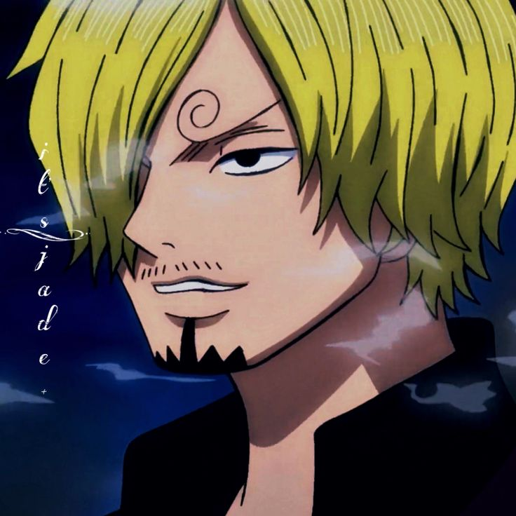

Matias Ortiz
Carrera
Estudio Ingeniería Civil Informática porque mi fascinación por la tecnología se une a mi convicción de que la programación es una herramienta sumamente poderosa que deseo dominar. La carrera representa la fusión perfecta entre la creación de infraestructuras y la innovación tecnológica. Creo firmemente que la programación no solo es esencial en el mundo actual, sino que también es la clave para materializar ideas y resolver problemas complejos en esta era digital. Mi elección está impulsada por mi pasión por la tecnología y mi deseo de marcar la diferencia en el mundo a través de la programación.

Hobbies
En mi tiempo libre, encuentro inspiración y equilibrio a través del baloncesto, un deporte que fomenta el trabajo en equipo y la superación personal. Además, canalizo mi creatividad hacia un emprendimiento de cobertura audiovisual deportiva, fusionando mi amor por la tecnología con mi pasión por el deporte y capturando momentos que transmiten la esencia misma del juego.